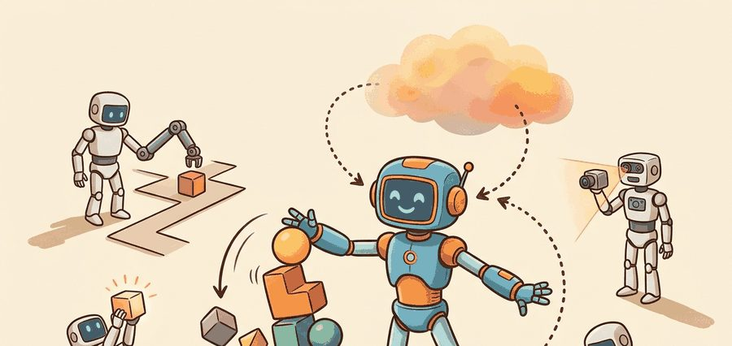
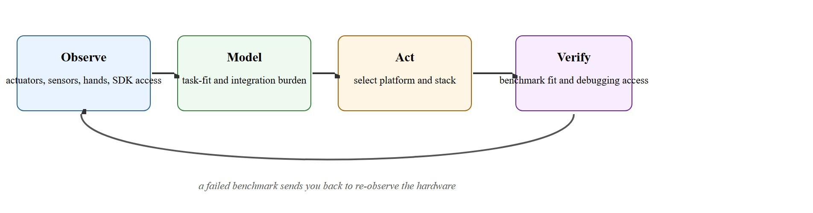

"Platform choice decides which research questions are real and which ones are just impossible on your hardware."
A Humanoid Lab Procurement Meeting

This section assumes familiarity with section 46.1, which establishes why humanoid morphology became the target form factor for embodied AI research. The platform capability vectors introduced here are extended in section 46.3, where whole-body and operational-space controllers are matched to specific actuator and sensing profiles. Teleoperation interface requirements for each platform are examined in section 46.5, and enterprise deployment constraints that filter platform choice further appear in section 46.9.
Six commercially available humanoid platforms shipped or took deposits in 2024 alone. A research team choosing among them is not picking a brand: it is committing to a specific ceiling on joint torque, a specific set of SDK (software development kit; the vendor's programming interface for reading sensor state and sending motor commands) control modes, and a specific answer to whether dexterous manipulation is even physically possible on day one. Get that choice wrong and your most important experiments will be blocked not by your algorithms but by hardware you cannot change. This section maps the capability vectors that actually determine what each platform can and cannot do, so you can match hardware constraints to your research agenda before the purchase order clears.
Two labs can buy humanoids on the same budget, chase the same manipulation results, and one of them will discover eighteen months later that its most important experiment was physically impossible on day one because a single datasheet number, peak hip torque or fingertip force resolution, fell below the task threshold. To make that failure visible before the purchase order clears, describe each platform as a capability vector $p = [n_{\mathrm{dof}}, \tau_{\max}, m_{\mathrm{payload}}, s_{\mathrm{perception}}, h_{\mathrm{dexterity}}, o_{\mathrm{sdk}}]$. The point is not to pretend these numbers collapse neatly into one score. The point is to make the tradeoffs explicit enough that a research program can choose a platform on purpose.
This abstraction matters because physical hardware imposes hard ceilings that no algorithm can exceed. Unitree G1's roughly 88 N·m peak leg torque caps the ground-reaction forces it can generate, so a sprinting gait that demands 200+ N·m at the hip is unreachable on G1 no matter how the policy is tuned; the same gait is feasible on H1's roughly 360 N·m hip actuators. G1's 23 degrees of freedom likewise cannot reach the trunk-pitch-plus-dual-arm configurations that a 28-DOF Apollo can hold during a low-shelf bin pick. Without a structured vector, teams compare on Figure and Optimus demo reels rather than on the datasheet $\tau_{\max}$, $n_{\mathrm{dof}}$, and fingertip force-resolution numbers that decide feasibility. Picking a platform whose $\tau_{\max}$ or $h_{\mathrm{dexterity}}$ falls below the task requirement blocks entire experiment families before any code is written. Figure 46.2A summarizes this idea visually: a sound platform comparison connects hardware specs to control and data consequences rather than to brand identity.
In practice, each component of $p$ is measured or bounded from hardware datasheets and SDK documentation, then compared against task-derived requirements. For example, a peg-insertion task requires fingertip force resolution above a threshold (setting a minimum $h_{\mathrm{dexterity}}$) and a control loop latency that allows the impedance controller to close within one contact event (bounding $o_{\mathrm{sdk}}$ to platforms exposing joint-level state). Researchers compute a weighted inner product $w \cdot p$ where $w$ encodes project priorities, making platform tradeoffs explicit and auditable rather than intuitive.
Publicly documented platforms stake out distinct positions. Unitree G1 emphasizes affordability and force-controlled hands; H1 is full-sized with stronger legs and richer onboard sensing. Atlas targets industrial mobile manipulation, 1X NEO home-facing autonomy with a supervised expert mode, and Apptronik Apollo general-purpose industrial work. Figure couples its hardware to a Vision-Language-Action model (VLA) narrative. Tesla Optimus stays comparatively closed in public technical documentation, which matters when a project depends on inspectable interfaces.
Consider the differences in concrete terms. Unitree G1 ships with 23 degrees of freedom and dexterous hands that control individual finger torque. Its peak leg joint torque is roughly 88 N·m, which limits dynamic running experiments. Unitree H1 raises leg torque to approximately 360 N·m at the hip. That fourfold increase changes what locomotion research is physically possible, not merely easier. This gap illustrates what researchers call the actuator ceiling problem: platform torque limits block entire classes of experiments regardless of how good the controller is. H1 enables more aggressive locomotion research, but ships without hands in the base configuration. Boston Dynamics electric Atlas exposes a ROS 2 (Robot Operating System 2) interface and targets payloads up to 25 kg for mobile manipulation, yet its SDK access tier for academic users stays more restricted than Unitree's. Apptronik designed Apollo for a 55 kg payload and shift-length operation, which matters for endurance experiments but requires negotiated access. These numbers are not design trivia: a team studying whole-body manipulation that picks H1 without a hand add-on must retrofit or simulate the very capability their research targets.
The remaining three platforms named in this section's title occupy the closed or emerging end of the same capability vector and are worth placing explicitly. Figure's 02/03 hardware is paired tightly to Figure's own Helix VLA (Vision-Language-Action) stack; the company publishes selected torque and payload figures but, as of this writing, does not expose a public academic SDK tier comparable to Unitree's, so a research team evaluating Figure is typically evaluating a vendor partnership and demo access rather than a purchasable open research platform. Tesla Optimus follows the same pattern with even less public technical documentation: actuator torque curves, hand degrees of freedom, and control-loop rates are not independently published, so the capability vector $p$ for Optimus is, in practice, mostly unmeasured, which itself is diagnostic information (an unmeasurable $o_{\mathrm{sdk}}$ term should be treated as a strong negative weight, not a placeholder zero). 1X NEO is the outlier: it targets home environments rather than labs or factories, ships with a supervised "expert mode" in which a remote human can tele-operate the robot to complete tasks the autonomy stack cannot yet handle, and its research access model runs through 1X's own data programs rather than a conventional academic SDK license. The practical lesson is the same across all three: when a platform's SDK openness cannot be verified from public documentation, treat $o_{\mathrm{sdk}}$ as unknown-and-likely-low in the scoring vector until a research agreement says otherwise, rather than assuming parity with Unitree- or ROS-based platforms.
When evaluating Unitree G1 or H1 for a learning-from-demonstration pipeline (a training approach where a policy learns from recorded human-teleoperated trajectories rather than trial-and-error), verify the SDK control mode before committing: both platforms expose a LOWLEVEL mode that streams individual joint torques and positions at 500 Hz, but the default out-of-box demos run in HIGHLEVEL mode, which only accepts velocity commands and hides joint-level state. Switching to LOWLEVEL requires setting unitree_sdk2's SportModeState to zero and rebooting the motion controller; attempting to log contact events or run impedance control without this step produces silently degraded data that looks valid but reflects controller saturation, not task dynamics. Check the unitree_sdk2py README section "Low-Level Control Prerequisites" before any data collection session.
A platform is useful to researchers when it exposes enough state, control, and data interfaces to turn failures into artifacts.
HumanoidBench (a simulated benchmark suite of standardized humanoid locomotion and manipulation tasks, used below to compare platforms on identical task definitions) is referenced repeatedly in what follows as the common yardstick for platform-task fit.
Figure 46.2.1 lays out this evaluation as a repeatable loop rather than a one-time checklist: observe what the hardware and SDK actually expose, model whether that fit matches your intended task, act by selecting a platform and stack, and verify against the benchmark family you actually care about.

Humanoid platforms should be compared by capability surfaces rather than by single numbers. The critical dimensions are: peak joint torque (which determines what locomotion gaits are physically achievable), control loop frequency and latency (which determines whether whole-body controllers such as operational-space control or model-predictive control can close at the required rate), hand degrees of freedom and fingertip force resolution (which determine whether contact-rich manipulation tasks such as peg insertion or cloth folding are tractable), and SDK control depth (which determines whether a researcher can inject a custom impedance controller or is limited to high-level velocity commands).
The platform decision also determines benchmark compatibility in a concrete way. HumanoidBench tasks such as "reach" and "push" require only rough end-effector positioning, so they run on H1 without hands. Tasks such as "door open" or "scissors" require individual finger torque control and typically only work on platforms that expose fingertip force readings at or above 10 Hz. Wrist-mounted force-torque sensors (typically 6-axis, 1000 Hz sampling on research-grade hardware) enable contact-event labeling for imitation learning.
So far: benchmark tasks vary in what hardware they require (some need only positioning, others need fingertip force sensing), and the sensors that make contact events labelable are not present on every platform, which is the hinge the next point turns on.
Platforms that lack those sensors silently drop contact labels and corrupt any dataset intended for contact-rich policy training. In one reported comparison, a team that collected properly labeled contact demonstrations on G1 needed roughly 200 to 400 episodes to learn a peg-insertion policy, while a team working from pose-only trajectories on a comparable platform reportedly required upward of 5,000 episodes to reach a similar success rate, presumably because the policy had to infer contact state from motion residuals rather than read it directly; treat these figures as illustrative of the gap's direction rather than a guaranteed ratio. Treating all humanoids as interchangeable destroys experimental clarity: the same evaluation pipeline can produce structurally different data on different hardware, which complicates cross-platform comparisons.
Benchmark compatibility settles what a platform can attempt, but a second, quieter constraint decides what you can actually learn from the attempt: how much of the robot's internal state the software will let you see. For research, a closed platform can be the wrong choice even when its hardware is impressive. If a platform's SDK exposes only a Cartesian end-effector interface and hides joint-level state, researchers cannot log joint torque residuals. Those residuals are what distinguishes a learned controller's success from hardware compensation. Boston Dynamics electric Atlas exposes a ROS 2 API, but the academic access tier limits researchers to operational-space targets rather than raw joint torque commands. A researcher cannot directly verify whether a whole-body controller saturates individual joints during a manipulation task.
A three-column capability table explains why two humanoid teams with similar goals can rationally choose different hardware.
platforms = {
"Unitree_G1": {"dexterity": 4, "locomotion": 3, "sdk": 4},
"Unitree_H1": {"dexterity": 3, "locomotion": 5, "sdk": 4},
"Atlas": {"dexterity": 4, "locomotion": 5, "sdk": 2},
"NEO": {"dexterity": 4, "locomotion": 3, "sdk": 3},
}
weights = {"dexterity": 0.4, "locomotion": 0.4, "sdk": 0.2}
scores = {name: round(sum(vals[k] * weights[k] for k in weights), 2) for name, vals in platforms.items()}
print(scores)
print(max(scores, key=scores.get))Expected output interpretation. Under this toy weighting, H1 and Atlas are close because locomotion is priced heavily. If SDK openness were more important, the ranking could flip. This is the exact point of writing the weights down.
max(scores, key=scores.get).Trace the inner product $w \cdot p$ for Unitree H1 with weights $w=[0.4, 0.4, 0.2]$ over [dexterity, locomotion, sdk]. H1's ratings are dexterity $=3$, locomotion $=5$, sdk $=4$. Step 1: dexterity term $=0.4 \times 3 = 1.2$. Step 2: locomotion term $=0.4 \times 5 = 2.0$. Step 3: sdk term $=0.2 \times 4 = 0.8$. Step 4: sum $=1.2 + 2.0 + 0.8 = 4.0$. Now reweight to prioritize openness: $w=[0.2, 0.2, 0.6]$. H1 becomes $0.2 \times 3 + 0.2 \times 5 + 0.6 \times 4 = 0.6 + 1.0 + 2.4 = 4.0$, but Atlas (sdk $=2$) drops from $4.0$ to $0.2 \times 4 + 0.2 \times 5 + 0.6 \times 2 = 0.8 + 1.0 + 1.2 = 3.0$. The ranking flips: H1 now beats Atlas purely because the weight vector started pricing inspectable interfaces. Writing the weights down is what makes that flip visible instead of accidental.
Use official platform docs for hardware facts, Isaac Lab or HumanoidBench for simulated task proxies, and low-level dynamics tools such as Pinocchio or Drake to test whether the published body can support your intended controller class.
Do not compare a public open stack to a closed vendor demo as if they expose the same research surface. They do not. A concrete version of this failure: a team chooses a platform based on a vendor demo showing smooth bimanual assembly, then discovers that the published SDK does not expose individual finger torque readings or wrist force-torque sensor streams. Their planned imitation learning pipeline requires those signals to label contact events. Without them, the data collection strategy collapses and the team must either retrofit hardware sensors (adding months and integration risk) or switch platforms after initial procurement. The warning sign is always the same: the demo shows a capability that the documented interface does not expose.
A platform with superior hardware specifications is not automatically the better research platform. Research productivity depends on what the software stack exposes, not on what the hardware contains. A robot with a high-resolution force-torque sensor is useless for contact-rich learning if the SDK only streams end-effector pose at 10 Hz and hides the sensor behind a proprietary safety filter. The correct mental model is that a platform's research value equals its weakest exposed interface: your controller and dataset pipeline can only use signals the SDK actually delivers at the frequency and resolution your task requires, regardless of what is physically present inside the chassis.
Think of a professional kitchen stocked with every ingredient imaginable, but the chef is only allowed to retrieve items through a single narrow hatch that fits one small plate at a time. No matter how full the pantry is, every dish is limited by what fits through that hatch at the speed the kitchen can pass it. A humanoid platform with hidden or low-rate interfaces works exactly the same way: the hardware pantry may be extraordinary, but your controller and your dataset can only consume what the SDK hatch actually passes through, at the rate and resolution it allows.
A lab focused on whole-body industrial manipulation may value Atlas-style industrial robustness or Apollo-style deployment framing. A lab focused on reproducible academic learning may prefer a more open and accessible platform such as G1 or H1, even if raw capability is lower.
BMW's Spartanburg plant ran Figure 02 humanoids on the body-shop line in 2024, where the capability vector argument played out literally: the task (inserting sheet-metal parts into fixtures) demanded specific fingertip force resolution and a control-loop rate fast enough to detect insertion contact. Figure's chosen actuator and SDK profile had to clear those thresholds before deployment, not after, exactly the datasheet-first filtering this section describes.
The best platform is the one that lets your team learn, debug, and publish, not the one with the most cinematic trailer.
Cross-platform policy transfer (2024-2026): A core open problem is training a manipulation or locomotion policy on one humanoid and deploying it on another without full retraining. Berkeley's RoboTransfer work (2024) and CMU's cross-embodiment generalization studies (2024) show that shared latent action representations can bridge some of the gap, but joint-torque mismatches between platforms such as Unitree G1 and electric Atlas still cause failure at contact transitions. The open question is how much of the capability vector difference can be absorbed in a learned adapter versus requiring hardware-matched fine-tuning.
Sim-to-real for dexterous bimanual tasks on commodity humanoids (2024-2026): Isaac Lab's humanoid suite (NVIDIA, 2024) and the Unitree-compatible MuJoCo models now let teams prototype bimanual assembly policies in simulation before touching hardware. The gap between simulated fingertip contact and real dexterous hand dynamics on G1-class hardware remains large enough that policies trained purely in simulation still fail on real peg-insertion tasks above a 1 mm tolerance. Labs at Stanford and ETH Zurich are actively closing this gap using contact-rich domain randomization, but as of 2024, no published transfer result yet matches the sim performance on real hardware consistently across task families. In some reported 2024 dexterous bimanual benchmarks, contact-transition failures at the sim-to-real boundary accounted for a majority of observed policy failures, even when locomotion transferred cleanly; the exact share varies by task family and should not be read as a fixed constant.
Whole-body teleoperation data collection at scale (2024-2026): Teams at Physical Intelligence (pi0, 2024) and Toyota Research Institute are treating teleoperation throughput as the primary bottleneck for humanoid foundation models. The platform question shifts from "which robot moves best" to "which robot produces the cleanest demonstration data at lowest per-episode cost." SDK interface depth directly determines whether a teleoperation session produces usable contact labels or only pose trajectories.
Open problem for PhD research: No existing benchmark cleanly isolates whether a policy failure on a humanoid platform is caused by insufficient joint torque, insufficient SDK sampling rate, or insufficient hand force resolution. A student could design a controlled ablation suite using a single platform (e.g., Unitree G1) with instrumented hardware that independently varies the observable signal bandwidth and actuator headroom per task, producing a failure-mode taxonomy that would let future platform comparisons be grounded in measurable hardware bottlenecks rather than aggregate success rate.
Which platform attribute matters more for your project: raw locomotion performance, dexterous hand capability, or inspectable software interfaces, and why?
Platform comparisons should include what is unknown. Missing interface documentation, unclear safety APIs, and uncertain teleoperation hooks are all part of the technical evaluation, not procurement trivia.
Once those unknowns are catalogued, the remaining question is what the platform was actually built to do, because that intended use quietly shapes every interface it exposes. Benchmark fit also matters. A platform built for home assistance and one built for industrial tote handling can both be described as general-purpose in marketing language while being very different research instruments.
| Tool or Library | Role in the Topic | Builder Advice |
|---|---|---|
| Official platform pages | Source of documented hardware claims | Prefer official specs over secondary summaries when writing the book. |
| HumanoidBench | Benchmark proxy for platform-task fit | Map each platform to the tasks it can plausibly support. |
| Pinocchio or Drake | Feasibility checks for controller assumptions | Use model-based tools to test whether published morphology supports your plan. |
Beginner (weekend): Build a platform scoring dashboard in Python using publicly available hardware specs for Unitree G1, H1, and one other humanoid; visualize the weighted capability vectors as a radar chart with Matplotlib, and let the user adjust weights interactively. The key challenge is finding authoritative numbers because vendor pages mix marketing claims with datasheets and you must decide which to trust and document your sources.
Intermediate (1-2 weeks): Implement a simulated platform-selection testbed in Isaac Lab or MuJoCo using the Unitree G1 URDF; load HumanoidBench tasks and log which tasks fail due to joint torque saturation versus which fail due to missing hand degrees of freedom, producing a per-task feasibility table. The key challenge is instrumenting the simulator to distinguish actuator-limit failures from policy failures without conflating the two in your logged metrics.
Intermediate (1-2 weeks): Build a ROS2 node that subscribes to a Unitree H1 in LOWLEVEL mode (using unitree_sdk2py), logs joint torque and contact event streams during teleoperated demonstrations, and exports labeled HDF5 episodes compatible with LeRobot's dataset format. The key challenge is synchronizing the 500 Hz joint stream with the lower-rate camera feed and ensuring contact labels are not silently dropped during controller saturation events.
This section supports whole-body control, teleoperation, and enterprise research tracks.
Build a platform scorecard for three current humanoids and one non-humanoid baseline. Explain how the ranking changes when you switch from a home-assistance task panel to an industrial one.
Platform-selection failures usually come from missing interfaces, not from missing hype. If the controller cannot be instrumented, the benchmark cannot be trusted.
Unitree G1 official page. https://www.unitree.com/g1
Current official description of G1 hardware and learning framing.
Unitree H1 official page. https://www.unitree.com/h1
Current official description of full-size H1 sensing and torque profile.
Figure Helix official page. https://www.figure.ai/helix
Current official view of Figure's humanoid VLA stack.
1X NEO official page. https://www.1x.tech/neo
Official description of NEO, Redwood AI, and supervised expert mode.
Apptronik Apollo official page. https://apptronik.com/apollo
Official industrial framing for Apollo.
Boston Dynamics Atlas product page. https://bostondynamics.com/products/atlas/
Official industrial framing for electric Atlas.
Platform choice is a research-method choice because it decides which signals, controllers, and safety cases you can actually inspect.
Choose one public humanoid platform for academic research and one for industrial pilot work. Justify each choice with a capability matrix and at least one explicit tradeoff you are accepting.